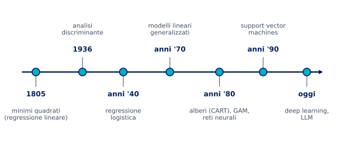
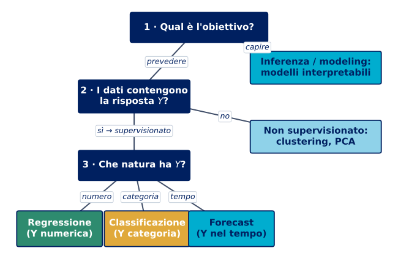
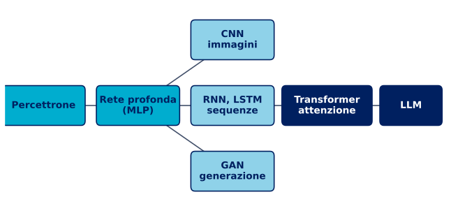

Apprendimento statistico
corso per CONAD Nord Ovest · dal modello statistico ai modelli profondi
Orso Peruzzi · Data Scientist, IFAB
26 giugno 2026
Chi sono
Orso Peruzzi
data scientist a IFAB (Bologna), la fondazione che co-promuove l’AI Factory italiana IT4LIA con il CINECA.
- mi occupo di previsione di serie storiche, proprio “dai modelli statistici ai modelli profondi”: il filo di oggi;
- formazione: astronomia e fisica all’università di Bologna, poi master in data science e apprendimento statistico (IMT Lucca e Firenze, con lode);
- tutto in parallelo al lavoro.
Cosa faccio
- modelli di rischio e churn su milioni di clienti;
- previsione della domanda per industria e distribuzione;
- manutenzione predittiva su sensori e benchmark di foundation model;
- strumenti di ogni giorno: scikit-learn, statsmodels, gradient boosting, reti neurali.
fuori dal lavoro: apicoltore con sette arnie e batterista jazz.
Benvenuti
Benvenuti al corso di
AI TRADIZIONALE
Benvenuti
Benvenuti al corso di
AI TRADIZIONALE
NO
Blocco 0 · Apertura
da dove nasce l’idea di “AI tradizionale” e perché è fuorviante
L’etichetta «AI tradizionale»
si sente parlare di «AI tradizionale» per tutto ciò che non è deep learning: un’etichetta che sa di vecchio, di serie B.
dall’altra parte, attorno al deep learning c’è un hype enorme, come fu per la bolla delle dot-com.
la tesi di oggi: l’apprendimento statistico è machine learning a tutti gli effetti, ed è la base da cui discendono anche i modelli più avanzati, fino agli LLM.
“AI tradizionale”: una storia lunga due secoli

- Non è una moda recente: i minimi quadrati nascono per l’astronomia a inizio Ottocento;
- ogni epoca ha aggiunto un mattone, fino alle reti profonde di oggi;
- “tradizionale” non vuol dire superato, vuol dire fondante.
Perché il termine è fuorviante
- Il termine nasce per contrapporre i vecchi sistemi simbolici e a regole alle reti neurali;
- oggi viene usato a sproposito per liquidare regressioni, alberi e SVM come tecnologia minore;
- ISL lo dice chiaro: lo statistical learning non va visto come una serie di scatole nere;
- una regressione logistica e una random forest sono lo stesso paradigma di una rete: imparare dai dati.
La vera «AI tradizionale»: i sistemi simbolici a regole.
La mappa del campo
- L’intelligenza artificiale è l’insieme più ampio;
- il machine learning ne è il cuore moderno, e coincide con l’apprendimento statistico;
- il deep learning è un sottoinsieme del machine learning, non un campo separato;
- “AI tradizionale”, semmai, sono i vecchi sistemi a regole.
Il programma della giornata
Mattina · teoria (4 ore)
- Apertura: perché “AI tradizionale” è un’etichetta fuorviante;
- dai modelli statistici allo statistical learning, l’equazione \(Y = f(X) + \varepsilon\);
- il cuore del corso: errore, overfitting e trade-off bias-varianza;
- le famiglie di modelli: lineare, regolarizzazione, alberi, ensemble, SVM;
- reti neurali e la big picture, fino agli LLM.
Pomeriggio · pratica (4 ore)
- NB0, setup su Colab e prima previsione;
- NB1, regressione e bias-varianza resi visibili;
- NB2, classificazione, regolarizzazione e cross-validation;
- NB3, alberi, ensemble e il caso retail Conad;
- NB4, demo di una piccola rete neurale.
Blocco 1 · Dal modello statistico allo statistical learning
Cosa chiedevamo alla statistica
esempi classici, in ambito aziendale e assicurativo, che vengono prima del machine learning:
- valutare la probabilità che un cliente compri un prodotto viste le sue caratteristiche;
- classificare i clienti in fedeli e infedeli sulla base della loro storia;
- prevedere la spesa aggiuntiva per l’upgrade di un prodotto o servizio;
- prevedere il numero di sinistri di una classe di assicurati, o stanare le frodi.
in tutti i casi: dai dati a una risposta quantitativa su qualcosa che non osserviamo ancora.
Lo schema comune: risposta e predittori
- C’è una risposta \(Y\), il fenomeno di interesse, ad esempio le vendite di un prodotto;
- ci sono dei predittori \(X_1, X_2, \dots, X_p\), le informazioni note;
- esempio ISL, dataset Advertising: \(Y\) sono le vendite, \(X_1, X_2, X_3\) i budget su TV, radio, volantino (nel libro: newspaper);
- la risposta ha tanti nomi (output, target, variabile dipendente), i predittori altrettanti (input, feature, covariate).
Un dataset: righe e colonne
i dati arrivano in una tabella: ogni riga è un’osservazione, ogni colonna una variabile.
| 1 |
8 |
6 |
32 € |
… |
no |
| 2 |
95 |
1 |
18 € |
… |
sì |
| 3 |
21 |
4 |
47 € |
… |
no |
- le righe sono le osservazioni, in numero \(n\) (qui i clienti);
- le colonne dei predittori sono \(p\) (qui recency, visite, scontrino, …);
- una colonna a parte è la risposta \(Y\) (qui il churn);
- imparare vuol dire stimare il legame tra le \(p\) colonne di input e la risposta, su tutte le \(n\) righe.
L’equazione di tutto: \(Y = f(X) + \varepsilon\)
\[
Y = \underbrace{f(X)}_{\text{sistematica}} + \underbrace{\varepsilon}_{\text{stocastica}}
\]
- \(f\) è la relazione sistematica, sconosciuta, che lega \(X\) a \(Y\);
- \(\varepsilon\) è l’errore, indipendente da \(X\) e a media nulla;
- \(f\) è l’informazione che \(X\) ci dà su \(Y\);
- tutto il corso parla di come stimare questa \(f\).
Un esempio concreto di \(Y = f(X) + \varepsilon\)
mettiamoci dei numeri, in stile Conad:
- \(Y\) è la spesa mensile del cliente, \(X\) il numero di visite;
- la parte sistematica potrebbe essere \(f(X) \approx 25 \cdot X\) euro, in media 25 euro a visita;
- ma due clienti con le stesse 4 visite spendono 92 e 108 euro: la differenza è \(\varepsilon\);
- \(\varepsilon\) racchiude tutto ciò che non misuriamo: gusti, promozioni colte, giornata storta.
- stimare \(f\) vuol dire trovare la regola media, qui i 25 euro a visita;
- non potremo mai prevedere \(\varepsilon\) esattamente: è l’errore irriducibile;
- un buon modello cattura \(f\), non insegue \(\varepsilon\).
Stimare \(f\) per due scopi
stimiamo \(f\) con \(\hat f\), e prevediamo con \(\hat Y = \hat f(X)\). l’errore di previsione si scompone:
\[
\mathbb{E}\big[(Y-\hat Y)^2\big]
= \underbrace{\big[f(X)-\hat f(X)\big]^2}_{\text{riducibile}}
+ \underbrace{\operatorname{Var}(\varepsilon)}_{\text{irriducibile}}
\]
- la parte riducibile dipende da quanto è buona \(\hat f\), e su quella possiamo lavorare;
- la parte irriducibile viene da \(\varepsilon\), fattori non misurati o puro caso, e non si elimina;
- nessun modello, per quanto sofisticato, scende sotto l’errore irriducibile.
Primo scopo: predizione
- A volte abbiamo gli input \(X\) e ci serve solo una buona previsione di \(Y\);
- \(\hat f\) può essere una scatola nera: non importa la sua forma, conta che \(\hat f(X)\) sia vicino a \(Y\);
- esempio ISL: una campagna di marketing diretto, vogliamo solo prevedere chi risponde;
- esempio Conad: quanto spenderà questo cliente nei prossimi dodici mesi?.
Secondo scopo: interpretazione
qui \(\hat f\) non può essere una scatola nera, vogliamo capirne la forma:
- quali predittori sono davvero associati alla risposta?;
- in che direzione e con quale intensità agiscono?;
- la relazione è semplice e lineare o più complicata?;
- esempio ISL Advertising: di quanto crescono le vendite per ogni euro in più sul volantino?.
Quiz lampo: predizione o interpretazione?
vogliamo sapere di quanto un euro speso in volantino fa aumentare le vendite, per decidere il budget.
- è un problema di predizione;
- è un problema di interpretazione;
- nessuno dei due.
B, interpretazione: ci interessa il legame tra un predittore e la risposta, non solo il numero finale.
Modeling vs learning
- Modeling, la statistica classica: postulo un meccanismo generatore dei dati, una forma per \(f\) nota a meno di pochi parametri, e la uso per spiegare;
- learning: tratto \(f\) come una scatola nera e cerco un algoritmo che la approssimi bene, con priorità alla previsione;
- non è un confine netto, ma uno spostamento di enfasi, dalle assunzioni ai dati.
All models are wrong, but some are useful
“Essentially, all models are wrong, but some are useful.” (G. Box)
- Ogni modello è una semplificazione della realtà, può essere sbagliato ma utile;
- il rasoio di Occam: tra modelli che spiegano i dati quasi ugualmente bene, scegli il più semplice;
- assunzioni comode (normalità, linearità, indipendenza) a volte non bastano a prevedere bene;
- da qui la spinta verso metodi più flessibili, lo statistical learning.
Parametrico vs non parametrico
Parametrico
- Assumo una forma, ad esempio lineare; \[ f(X) = \beta_0 + \beta_1 X_1 + \dots + \beta_p X_p \]
- Riduco tutto a stimare i \(\beta\);
- semplice, ma se la forma è sbagliata la stima è scadente.
Non parametrico
- Non impongo una forma a \(f\);
- la lascio decidere ai dati, con grande flessibilità;
- si adatta a tante forme diverse;
- ma servono molti dati, e può overfittare.
Supervisionato vs non supervisionato
- Supervisionato: osserviamo sia i predittori \(X\) sia la risposta \(Y\), che guida l’apprendimento;
- non supervisionato: abbiamo solo \(X\) e cerchiamo strutture, ad esempio gruppi di clienti;
- esempio ISL di non supervisionato: segmentare i clienti in grandi e piccoli spenditori;
- oggi ci concentriamo sul supervisionato, il terreno di churn e previsione vendite.
Regressione vs classificazione
- Dipende dalla natura della risposta \(Y\);
- regressione: \(Y\) quantitativa, ad esempio le vendite o il valore di un danno;
- classificazione: \(Y\) categoriale, ad esempio cliente fedele o infedele, frode o non frode;
- la logistica, nonostante il nome, è un metodo di classificazione perché stima una probabilità.
Fedele o infedele? Un classico problema di classificazione.
Si sceglie sempre per task
nella data science non si parte dal modello, ma dal task: cosa stiamo cercando? la risposta guida tecniche e metodologia. tre domande, in ordine:

Blocco 2 · Il cuore: accuratezza e bias-varianza
Allenare l’algoritmo e misurare l’errore
stimare \(\hat f\) dai dati di training si dice anche allenare l’algoritmo. quanto è bravo? in regressione lo misuriamo con l’errore quadratico medio:
\[
\text{MSE} = \frac{1}{n}\sum_{i=1}^{n}\big(y_i - \hat f(x_i)\big)^2
\]
- è piccolo se le previsioni sono vicine ai valori veri, grande se sbagliano molto;
- ma c’è una trappola: calcolato sui dati di addestramento, inganna;
- da qui la distinzione fondamentale tra training error e test error.
Training error vs test error
- Il training error è l’MSE sui dati usati per addestrare;
- il test error è l’MSE su dati nuovi, mai visti;
- a noi interessa solo il secondo: vogliamo generalizzare, non ripetere;
- esempio ISL: per la borsa non conta indovinare i prezzi passati, ma quelli di domani.
Un esempio simulato
- Simuliamo dati \(Y = f(X) + \varepsilon\), conoscendo la vera \(f\);
- una parte dei punti va nel training set, una parte nel test set;
- alleniamo i modelli sui punti grigi;
- li giudichiamo sui punti ciano, quelli mai visti.
Modelli a flessibilità crescente
- Il modello rigido (lineare) non segue la curva;
- quello equilibrato la coglie bene;
- quello troppo flessibile insegue ogni punto, anche il rumore;
- sul training set, più flessibilità sembra sempre meglio.
La U del test error
- Il training error cala sempre con la flessibilità;
- il test error prima cala, poi risale: disegna una U;
- a sinistra underfitting, a destra overfitting;
- il minimo della U è il modello che cerchiamo.
Overfitting: imparare a memoria
un’immagine per ricordarlo: lo studente che impara a memoria i compiti già svolti.
- va benissimo sui compiti che ha già visto (il training): li ripete a memoria;
- ma all’esame, con esercizi nuovi (il test), va in difficoltà: non ha capito il metodo;
- chi invece capisce il metodo è meno perfetto sui vecchi compiti ma se la cava sui nuovi;
- un modello che overfitta è il primo studente: bravissimo sul training, fragile sul test.
- training error bassissimo e test error alto vuol dire ho memorizzato, non ho imparato;
- la difesa è la stessa dello studente: esercitarsi su problemi nuovi, cioè validare su dati mai visti.
Quiz lampo: il modello che non sbaglia
un modello azzecca quasi perfettamente tutti i dati di addestramento.
- ottimo, è il modello che cercavamo;
- sospetto, potrebbe overfittare e andare male sui dati nuovi;
- impossibile da dire senza altre informazioni.
B. il giudice vero è il test error: un training error quasi nullo è spesso il segnale di un modello troppo flessibile.
La scomposizione dell’errore
l’errore di test atteso in un punto si scompone in tre pezzi:
\[
\mathbb{E}\!\left[(y_0 - \hat f(x_0))^2\right]
= \operatorname{Var}(\hat f(x_0))
+ \big[\operatorname{Bias}(\hat f(x_0))\big]^2
+ \sigma^2
\]
- Vogliamo bassa varianza e basso bias insieme;
- \(\sigma^2\) è l’errore irriducibile, non si tocca;
- bias e varianza dipendono dall’algoritmo che scegliamo.
Bias e varianza: l’intuizione del bersaglio
- Ogni tiro è il modello stimato su un campione diverso;
- bias alto: i tiri sono lontani dal centro in modo sistematico;
- varianza alta: i tiri sono molto sparsi tra loro;
- vogliamo il bersaglio in alto a sinistra: centrato e concentrato.
La slide-madre: il trade-off distorsione-varianza
- Modelli troppo semplici: bias alto, varianza bassa (underfitting);
- modelli troppo flessibili: bias basso, varianza alta (overfitting);
- l’errore di test minimo sta nell’equilibrio, non agli estremi;
- vale per ogni metodo, dalla regressione alle reti profonde.
Flessibilità vs interpretabilità
- Più flessibilità può ridurre il bias, ma costa varianza e interpretabilità;
- i modelli interpretabili stanno in alto a sinistra;
- i molto flessibili in basso a destra;
- non esiste il modello migliore in assoluto: in statistica non c’è un pasto gratis.
Come scegliere il punto giusto: il resampling
- Non possiamo usare il test set per scegliere il modello, lo falserebbe;
- validation set: si tiene da parte una fetta di dati, di solito il 25 o 30 per cento;
- k-fold: si divide in \(k\) parti, si addestra su \(k-1\) e si valuta sulla restante, a rotazione;
- LOOCV: il caso estremo con \(k = n\), si lascia fuori un dato alla volta.
La cross-validation, passo passo
un esempio concreto di 5-fold su 1.000 clienti:
- dividiamo i clienti in 5 gruppi da 200;
- giro 1: alleniamo sui gruppi 2-3-4-5, valutiamo sul gruppo 1;
- giro 2: alleniamo su 1-3-4-5, valutiamo sul gruppo 2;
- e così via, finché ogni gruppo ha fatto da test una volta;
- l’errore finale è la media dei 5 errori.
- ogni cliente finisce nel test esattamente una volta;
- usiamo tutti i dati per allenare e per validare, senza toccare il test set finale;
- è più stabile di un solo split e ci dice quale flessibilità scegliere.
Quiz lampo: la cross-validation
a cosa serve principalmente la k-fold cross-validation?
- ad addestrare il modello più velocemente;
- a stimare l’errore su dati nuovi usando solo i dati di training;
- a eliminare l’errore irriducibile.
B. stima il test error senza toccare il test set, così possiamo scegliere la flessibilità giusta.
Quando \(Y\) è una classe: l’errore si misura diverso
in classificazione non c’è l’MSE: contiamo gli errori.
- tasso d’errore: quota di previsioni sbagliate; l’accuratezza è il suo complemento a uno;
- la matrice di confusione distingue i tipi di errore: falsi positivi e falsi negativi non costano uguale;
- esiste un errore minimo, il tasso d’errore di Bayes: l’analogo dell’errore irriducibile \(\sigma^2\) della regressione.
| vero: no |
veri negativi |
falsi positivi |
| vero: sì |
falsi negativi |
veri positivi |
nel churn un falso negativo, perdere un cliente senza accorgersene, di solito costa più di un falso allarme.
La soglia è una scelta: ROC e AUC
un classificatore stima una probabilità; per decidere serve una soglia, di default 0,5, ma si può spostare.
- abbassare la soglia trova più positivi (più veri positivi) ma anche più falsi allarmi;
- la curva ROC disegna questo compromesso al variare della soglia;
- l’AUC, l’area sotto la ROC, riassume la bravura del modello in un numero tra 0,5 (a caso) e 1 (perfetto);
- nel pomeriggio, in NB2, gireremo la soglia e leggeremo la ROC con le nostre mani.
- soglia bassa: tante segnalazioni, pochi sfuggono, ma molti falsi allarmi;
- soglia alta: poche segnalazioni, più sicure, però qualcuno sfugge;
- la soglia giusta dipende dai costi del caso, non è un dato tecnico.
Take-home del blocco
- L’obiettivo è generalizzare: conta il test error, non il training error;
- più flessibilità non è sempre meglio, per via dell’overfitting;
- bias e varianza tirano in direzioni opposte, si cerca l’equilibrio;
- cross-validation e split train/test sono gli strumenti per trovarlo;
- in classificazione l’errore si legge con accuratezza, matrice di confusione e AUC.
Blocco 3 · Le famiglie di modelli
Non un catalogo, ma una mappa
- Non serve memorizzare ogni metodo, serve capire dove si colloca;
- ogni famiglia occupa un posto sul piano flessibilità-interpretabilità;
- l’idea ricorrente è sempre la stessa: gestire il trade-off bias-varianza;
- partiamo dalla baseline più semplice e saliamo in flessibilità.
La baseline interpretabile: regressione lineare
\[ \hat y = \hat\beta_0 + \hat\beta_1 x_1 + \dots + \hat\beta_p x_p
\qquad \min_{\beta}\ \text{RSS} = \sum_{i=1}^{n}\big(y_i - \hat y_i\big)^2 \]
- I coefficienti si stimano con i minimi quadrati, minimizzando la somma dei quadrati dei residui (RSS);
- ogni \(\hat\beta_j\) dice quanto pesa quel predittore, a parità degli altri;
- esempio ISL: vendite in funzione dei budget TV, radio, volantino;
- semplice, veloce, interpretabile: il punto di partenza, non il nemico.
Leggere i coefficienti: dal numero al significato
il bello del lineare e del logistico: i coefficienti si leggono.
regressione (vendite, Advertising):
- se \(\hat\beta_{\text{TV}} = 0{,}047\), ogni 1.000 in più di budget sulla TV valgono circa 47 unità vendute in più, a parità del resto;
- il segno dà la direzione, la grandezza dà l’intensità.
classificazione (insolvenza, Default):
- la logistica ragiona in odds: un coefficiente positivo sul saldo significa che, salendo il saldo, l’insolvenza diventa più probabile;
- dal logit si torna alla probabilità con la curva a S.
è il livello di lettura che un modello scatola nera non offre: lo rivedremo con la tabella statsmodels in NB1.
Classificazione interpretabile: regressione logistica
modella la probabilità dell’evento tramite il logit:
\[ \log\frac{p(X)}{1-p(X)} = \beta_0 + \beta_1 X_1 + \dots \]
- la probabilità resta tra 0 e 1, curva a S;
- esempio ISL, dataset Default: prevedere l’insolvenza dal saldo;
- baseline della classificazione del pomeriggio.
Il classificatore di Bayes e i k vicini
- Il classificatore ideale assegna alla classe più probabile, \(\max_j \Pr(Y=j \mid X=x_0)\);
- non conosciamo quella probabilità, la stimiamo;
- KNN la approssima coi \(K\) vicini più prossimi; \[ \hat\Pr(Y=j\mid x_0)=\frac{1}{K}\sum_{i\in N_0} I(y_i=j) \]
Anche qui il trade-off
- \(K\) piccolo: confine flessibile, alta varianza, rischio overfitting;
- \(K\) grande: confine liscio, alto bias;
- la flessibilità si misura con \(1/K\);
- stessa U del test error vista per la regressione.
Quando i predittori sono troppi
- Con tanti predittori, o predittori molto correlati, i minimi quadrati diventano instabili;
- il modello insegue il rumore e overfitta, la varianza esplode;
- servono pochi coefficienti grandi e affidabili, non tanti coefficienti ballerini;
- la soluzione si chiama regolarizzazione.
Regolarizzazione: ridge
\[ \min_{\beta}\ \sum_{i=1}^{n}\big(y_i-\hat y_i\big)^2 + \lambda \sum_{j=1}^{p}\beta_j^2 \]
- Alla somma degli errori si aggiunge una penalità \(L_2\) sui coefficienti;
- la penalità spinge i coefficienti verso lo zero, senza azzerarli;
- il parametro \(\lambda\) regola quanto si stringe, lo si sceglie in cross-validation;
- riduce la varianza accettando un po’ di bias: di nuovo il trade-off.
Regolarizzazione: lasso e sparsità
\[ \min_{\beta}\ \sum_{i=1}^{n}\big(y_i-\hat y_i\big)^2 + \lambda \sum_{j=1}^{p}|\beta_j| \]
- La penalità \(L_1\) può azzerare del tutto alcuni coefficienti;
- in pratica fa selezione delle variabili;
- la geometria del vincolo spiega perché solo il lasso produce zeri.
Quiz lampo: ridge o lasso?
avete cento predittori e sospettate che solo una decina conti davvero. volete un modello che lo dica.
- ridge, restringe tutti i coefficienti;
- lasso, azzera quelli inutili e tiene i pochi che contano;
- minimi quadrati senza penalità.
B, lasso: la penalità \(L_1\) porta a zero i coefficienti irrilevanti, facendo selezione automatica.
Oltre la linearità: polinomi e spline
- A volte la relazione non è una retta, ad esempio i salari che salgono con l’età e poi calano;
- polinomi: aggiungo \(x^2, x^3, \dots\), ma instabili agli estremi;
- spline: curve flessibili a tratti, molto più stabili;
- esempio ISL: il dataset Wage, salario in funzione dell’età.
GAM, modelli additivi generalizzati
\[ y = \beta_0 + f_1(x_1) + f_2(x_2) + \dots + f_p(x_p) + \varepsilon \]
- Una funzione liscia per ogni predittore, sommate insieme;
- catturano relazioni non lineari mantenendo l’additività;
- si può leggere l’effetto di ogni variabile separatamente;
- un buon compromesso tra flessibilità e interpretabilità.
Metodi ad albero: l’albero di decisione
- Una sequenza di domande sì o no che divide i clienti in gruppi;
- molto intuitivo, facile da spiegare a chiunque;
- ma un singolo albero è instabile e tende a overfittare;
- da qui l’idea di combinarne molti, gli ensemble.
L’ensemble: la saggezza della folla
perché tanti alberi mediocri battono un solo albero bravo?
- è il principio della saggezza della folla: tante opinioni imperfette e indipendenti, messe insieme, sbagliano meno del singolo esperto;
- ogni albero vede una parte diversa dei dati e fa errori diversi;
- mediando le loro previsioni, gli errori casuali si compensano e resta il segnale;
- è esattamente quello che fanno bagging e random forest.
- conta che gli alberi siano diversi tra loro: se sbagliano tutti allo stesso modo, la media non aiuta;
- la random forest li rende diversi sia sui dati sia sulle variabili.
Dagli alberi agli ensemble
- Bagging: media tanti alberi addestrati su campioni diversi, abbatte la varianza;
- random forest: bagging più decorrelazione degli alberi, di solito molto efficace;
- boosting: alberi piccoli aggiunti in sequenza, ognuno corregge gli errori del precedente;
- nel pomeriggio vedremo dal vivo l’albero che overfitta e la foresta che lo stabilizza.
Boosting: imparare dagli errori
il boosting ha un’altra strategia, sequenziale invece che parallela.
- immagina uno studente che, dopo ogni simulazione d’esame, si concentra solo sulle domande sbagliate;
- il boosting fa così: ogni alberello piccolo corregge gli errori lasciati dai precedenti;
- alla fine si sommano tanti piccoli aggiustamenti mirati;
- spesso è il modello più accurato, ma va dosato: troppi passi e ricomincia a overfittare.
SVM: margine massimo e kernel
- L’idea: separare le classi con il confine che lascia il margine più ampio;
- contano solo i punti vicini al confine, i vettori di supporto;
- il trucco del kernel permette confini non lineari senza costruire nuove feature a mano;
- efficace anche quando i predittori sono molti.
Tutto sullo stesso piano
| Lineare, logistica |
alta |
bassa |
baseline, quando serve spiegare |
| Ridge, lasso |
alta |
bassa-media |
tanti predittori, selezione |
| GAM, spline |
media |
media |
non linearità da leggere |
| Alberi |
media |
media |
regole semplici e chiare |
| Random forest, boosting |
bassa |
alta |
massima accuratezza |
| SVM |
bassa |
media-alta |
confini netti, alta dimensione |
| Reti profonde |
molto bassa |
altissima |
tanti dati, immagini, testo |
nessun modello vince sempre (il “no free lunch”): la scelta è guidata dal task.
Blocco 4 · Reti neurali e la big picture
Il neurone: una regressione vestita a festa
\[ a = g\!\left(w_0 + \sum_{j=1}^{p} w_j x_j\right) \]
- Un neurone fa una combinazione lineare degli input, come la regressione;
- poi applica una funzione non lineare \(g\), l’attivazione, che gli dà espressività;
- di per sé è poco più di una regressione;
- la potenza nasce quando se ne impilano tanti.
Come imparano i modelli: costo e discesa del gradiente
addestrare vuol dire minimizzare una funzione di costo (o perdita), che misura quanto il modello sbaglia.
- in regressione il costo è l’MSE; in classificazione è la log-verosimiglianza (cross-entropy);
- a volte il minimo si trova con una formula, come i minimi quadrati della retta;
- ma per le reti e i modelli complessi una formula chiusa non esiste.
- allora si procede a piccoli passi: si guarda la pendenza (il gradiente) e si scende verso il basso;
- l’ampiezza del passo è il learning rate, il numero di passi sono le iterazioni;
- è il
max_iter che vedrete nei notebook: la rete trova i pesi così, scendendo il gradiente.
Dal dettaglio al macroscopico
- Fino agli alberi abbiamo aperto \(f\) nel dettaglio, seguendo ISL: pochi parametri, formule, interpretazione;
- nei modelli profondi \(f\) ha milioni di parametri, non la apriamo pezzo per pezzo;
- cambiamo zoom: ragioniamo a livello di architettura, cioè come sono collegati i blocchi;
- ma i principi restano quelli del mattino: \(Y = f(X)\), training e test, overfitting, regolarizzazione.
Reti profonde: cosa cambia davvero
- Impilando strati la rete costruisce rappresentazioni sempre più astratte dei dati;
- non scegliamo noi le feature: le impara la rete, è il feature learning;
- è una \(f\) estremamente flessibile, ma in fondo è ancora \(Y = f(X)\);
- più capacità porta più potenza e più rischio di overfitting: servono molti più dati.
Feature learning, in concreto
cosa vuol dire che la rete impara le feature da sola?
- per riconoscere una cifra scritta a mano nessuno le dice cerca i bordi;
- i primi strati imparano da soli pattern semplici: bordi e angoli;
- gli strati intermedi li combinano in forme, curve e incroci;
- gli ultimi strati riconoscono l’oggetto intero, la cifra;
- noi non scegliamo le feature: emergono dai dati, livello dopo livello.
- nei modelli del mattino le feature le scegliamo noi: recency, visite, scontrino;
- nelle reti profonde questo lavoro lo fa la rete: è il loro superpotere sui dati grezzi come immagini e testo.
È ancora apprendimento statistico
- Stessi concetti del mattino: training e test, overfitting, regolarizzazione, validazione;
- una rete senza regolarizzazione overfitta come un polinomio di grado troppo alto;
- più dati e più capacità spostano il trade-off bias-varianza, non lo eliminano;
- niente magia: gli stessi principi, su scala molto più grande.
Perché le reti vogliono tanti dati
flessibilità altissima e pochi dati non vanno d’accordo.
- una rete profonda ha milioni di parametri: è una \(f\) liberissima di piegarsi;
- con pochi dati questa libertà diventa un problema: la rete impara il rumore, overfitta;
- servono molti esempi per riempire tutta quella flessibilità e farla generalizzare;
- è il trade-off bias-varianza di stamattina: più capacità chiede più dati per non sbilanciarsi sulla varianza;
- per questo su tabelle piccole un modello semplice spesso batte la rete, mentre su milioni di immagini la rete domina.
Quiz lampo: la rete profonda
una rete neurale profonda è governata dal trade-off bias-varianza?
- no, è un paradigma completamente diverso;
- sì, vale lo stesso trade-off, solo con una \(f\) molto più flessibile;
- solo se ha pochi strati.
B. una rete è apprendimento statistico a tutti gli effetti: stesso trade-off, stesse difese, overfitting compreso.
Le architetture, per tipo di dato
a ogni tipo di dato la sua architettura; sotto restano sempre neuroni e \(Y = f(X)\):
| Immagini |
CNN |
convoluzioni: filtri che scorrono e colgono pattern locali |
| Sequenze, testo |
RNN, LSTM |
memoria: lo stato porta avanti il contesto |
| Testo su larga scala |
Transformer |
attenzione: ogni elemento guarda tutti gli altri |
| Generazione |
GAN |
due reti in competizione: generatore contro discriminatore |
CNN: vedere le immagini
- I filtri (convoluzioni) scorrono sull’immagine e colgono pattern locali: bordi, texture, forme;
- gli strati successivi combinano i pattern semplici in concetti via via più astratti;
- alla fine una parte completamente connessa classifica;
- è il feature learning applicato alla visione.
RNN e LSTM: ricordare le sequenze
- Per dati in sequenza (testo, serie storiche) serve memoria;
- la stessa cella si ripete nel tempo e passa avanti lo stato \(h_t\);
- le LSTM aggiungono delle “porte” per ricordare anche a lungo;
- è la base storica del linguaggio, prima dei transformer.
GAN: generare dati nuovi
- Due reti in competizione: il generatore crea dati finti, il discriminatore prova a smascherarli;
- migliorano a vicenda, finché i dati finti diventano credibili;
- servono a generare immagini, audio, dati sintetici.
Statistical learning vs deep learning
| Dove guardiamo |
dentro \(f\): parametri, formule |
l’architettura |
| Le feature |
le scegliamo noi |
le impara la rete |
| Dati richiesti |
anche pochi |
molti, spesso moltissimi |
| Interpretabilità |
medio-alta |
bassa |
| Dato tipico |
tabellare |
immagini, testo, audio |
stesso paradigma, scala e zoom diversi.
La mappa genealogica dei modelli profondi

- CNN per le immagini, RNN e LSTM per le sequenze, GAN per la generazione;
- i transformer, basati sull’attenzione, sono la base dei grandi modelli linguistici (LLM).
Cose importanti da ricordare
- Conta la capacità di generalizzare, quindi il test error;
- bias e varianza vanno bilanciati, evitando l’overfitting;
- gli strumenti: split train/test, k-fold cross-validation, criteri con penalità;
- lo stesso impianto regge dalla regressione lineare alle reti profonde.
Si va in laboratorio
nel pomeriggio, code-along su Colab:
- NB0, setup e prima previsione;
- NB1, regressione e bias-varianza resi visibili;
- NB2, classificazione, regolarizzazione e cross-validation;
- NB3, alberi, ensemble e il caso retail in stile Conad;
- NB4, una piccola rete neurale che richiama tutto il mattino.
Riferimenti e materiali
i notebook, i dati e la bibliografia per riprendere tutto a casa
I notebook del pomeriggio
si aprono direttamente in Google Colab, senza installare nulla:
i dati sono caricati via URL dal repo, quindi i notebook girano anche a casa.
Libri di riferimento
- James, Witten, Hastie, Tibshirani, Taylor (2023), An Introduction to Statistical Learning with Applications in Python, Springer (il testo guida, gratuito su statlearning.com);
- James, Witten, Hastie, Tibshirani (2020), Introduzione all’apprendimento statistico, Piccin (edizione italiana, per la terminologia);
- Hastie, Tibshirani, Friedman (2009), The Elements of Statistical Learning, Springer (il riferimento avanzato);
- Torelli (2024), Una breve introduzione all’Apprendimento Statistico (o Machine Learning), Università di Trieste.
Articoli fondativi
- Breiman (2001), Statistical Modeling: The Two Cultures, Statistical Science (modeling vs learning);
- Geman, Bienenstock, Doursat (1992), Neural Networks and the Bias/Variance Dilemma, Neural Computation;
- Hoerl, Kennard (1970), Ridge Regression, Technometrics;
- Tibshirani (1996), Regression Shrinkage and Selection via the Lasso, JRSS B;
- Breiman (2001), Random Forests, Machine Learning;
- Friedman (2001), Greedy Function Approximation: a Gradient Boosting Machine, Annals of Statistics;
- Cortes, Vapnik (1995), Support-Vector Networks, Machine Learning;
- LeCun, Bengio, Hinton (2015), Deep Learning, Nature;
- Vaswani et al. (2017), Attention Is All You Need, NeurIPS (i transformer, base degli LLM).
Strumenti e dati
- Scikit-learn: Pedregosa et al. (2011), Scikit-learn: Machine Learning in Python, JMLR;
- dataset canonici ISL: Auto, Default, Carseats, Hitters;
- dataset retail sintetico stile Conad: generato per questo corso, riproducibile con
data/genera_dataset.py;
- tutto il materiale vive in un unico repo pubblico, questo sito ne è la spina dorsale.
Grazie
Orso Peruzzi · Data Scientist, IFAB · domande?